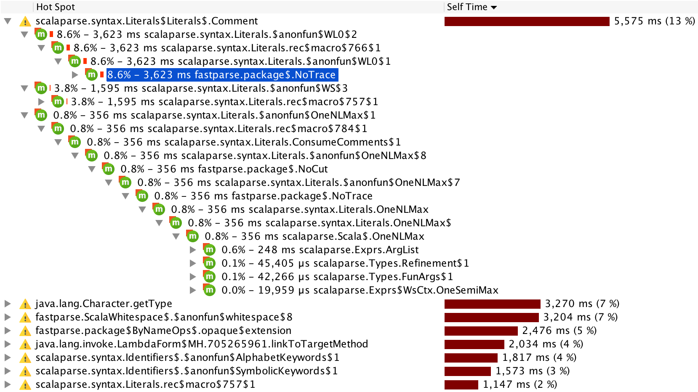

import fastparse._, NoWhitespace._
def number[$: P]: P[Int] = P( CharIn("0-9").rep(1).!.map(_.toInt) )
def parens[$: P]: P[Int] = P( "(" ~/ addSub ~ ")" )
def factor[$: P]: P[Int] = P( number | parens )
def divMul[$: P]: P[Int] = P( factor ~ (CharIn("*/").! ~/ factor).rep ).map(eval)
def addSub[$: P]: P[Int] = P( divMul ~ (CharIn("+\\-").! ~/ divMul).rep ).map(eval)
def expr[$: P]: P[Int] = P( addSub ~ End )val Parsed.Success(2, _) = parse("1+1", expr(_))
val Parsed.Success(15, _) = parse("(1+1*2)+3*4", expr(_))
val Parsed.Success(21, _) = parse("((1+1*2)+(3*4*5))/3", expr(_))
val Parsed.Failure(expected, failIndex, extra) = parse("1+1*", expr(_))
val longAggMsg = extra.trace().longAggregateMsg
assert(
failIndex == 4,
longAggMsg ==
"""Expected expr:1:1 / addSub:1:1 / divMul:1:3 / factor:1:5 / (number | parens):1:5, found """""
)FastParse is a Scala library for parsing strings and bytes into structured data. This lets you easily write a parser for any arbitrary textual data formats (e.g. program source code, JSON, ...) and have the parsers run at an acceptable speed, with great error debuggability and error reporting. Features include:
- Comparable in speed to a hand-written parser, 200x faster than scala-parser-combinators
- 1/10th the size of a hand-written parser
- Automatic, excellent error-reporting and diagnostics.
- Streaming Parsing of data-sets to avoid pre-loading everything into memory
- Compatible with both Scala-JVM and Scala.js
This documentation serves as a thorough reference on how to use this library. For a more hands-on introduction, take a look at the following blog post:
FastParse is a project by Li Haoyi. If you use FastParse and enjoyed it, please chip in to support our development at https://www.patreon.com/lihaoyi.
The following sections will introduce you to FastParse and how to use it.
To begin using FastParse, add the following to your build config
"com.lihaoyi" %% "fastparse" % "2.2.2" // SBT
ivy"com.lihaoyi::fastparse:2.2.2" // Mill
To use with Scala.js, you'll need
"com.lihaoyi" %%% "fastparse" % "2.2.2" // SBT
ivy"com.lihaoyi::fastparse::2.2.2" // Mill
Basic
The simplest parser matches a single string:
import fastparse._, NoWhitespace._
def parseA[$: P] = P("a")
val Parsed.Success(value, successIndex) = parse("a", parseA(_))
assert(value == (), successIndex == 1)
val f @ Parsed.Failure(label, index, extra) = parse("b", parseA(_))
assert(
label == "",
index == 0,
f.msg == """Position 1:1, found "b""""
)
Such a parser returns a Parsed.Success if the input matches the string, and otherwise returns a Parsed.Failure.
As you can see, by default the Parsed.Success contains
a (): Unit, unless you use Capture or
Map described below.
You can also wrap the strings in an IgnoreCase("...") if you want the matching to be case-insensitive.
The P(...) lets you write mutually recursive parsers, without
running into circular initialization problems, and gives the parser a
nice, human-readable name (from the def
it is being assigned to) which appears in parse error messages.
In general, every time you assign a parser
to a def, you should wrap it in P(...).
You can also call fastparse.parse on any
geny.Readable value,
such as Array[Byte]s to parse binary data, or java.io.InputStreams
for streaming parsing.
Failures
import fastparse._, NoWhitespace._
def parseEither[$: P] = P( "a" | "b" )
def parseA[$: P] = P( parseEither.? ~ "c" )
val f @ Parsed.Failure(failureString, index, extra) = parse("d", parseA(_))
assert(
failureString == "",
index == 0,
f.msg == """Position 1:1, found "d""""
)
// .trace() collects additional metadata to use for error reporting
val trace = f.trace()
// `.msg` records the last parser that failed, which is "c", and
// `.longMsg` also shows the parsing stack at point of failure
assert(
trace.label == "\"c\"",
trace.index == 0,
trace.msg == """Expected "c":1:1, found "d"""",
trace.longMsg == """Expected parseA:1:1 / "c":1:1, found "d""""
)
// aggregateMsg and longAggregateMsg record all parsers
// failing at the position, "a" | "b" | "c",
assert(
trace.aggregateMsg == """Expected (parseEither | "c"):1:1, found "d"""",
trace.longAggregateMsg == """Expected parseA:1:1 / (parseEither | "c"):1:1, found "d""""
)When parsing, dealing with failures is an important part of making things work. Fastparse provides three levels of error reporting you can ask for when a parse fails:
-
The default
Parsed.Failureonly tells you the position of the error message, without any clues what went wrong at that position. -
You can pass in the flag
verboseFailures = truetofastparse.parseto get a better description of what caused the parse failure. This slows the parse down by a significant amount (takes ~50% longer than a normal parse), You can then use the.msgor.longMsgto see what's going on. -
You can call
failure.trace()on an existing failure to perform a second parse over the initial input. This also gives you access tofailure.trace().msgandfailure.trace().longMsg, but additionally provides.aggregateMsgand.longAggregateMsgfor high-level listing of what was expected at point of failure, or.terminalsMsgand.longTerminalsMsgfor a low-level view of what individual strings or characters were expected at point of failure.
In general, you may either want to run your parses with
verboseFailures enabled, or run in the default fast mode
and fall back to .trace() when
something goes wrong. Often the number of parse failures is
small compared to the number of successes, and this approach
ensures the common success case is as fast as possible.
Sequence
def ab[$: P] = P( "a" ~ "b" )
val Parsed.Success(_, 2) = parse("ab", ab(_))
val Parsed.Failure(_, 1, _) = parse("aa", ab(_))
You can combine two parsers with the ~ operator. This creates a new parser that only succeeds if both left and right parsers succeed one after another.
Repeat
def ab[$: P] = P( "a".rep ~ "b" )
val Parsed.Success(_, 8) = parse("aaaaaaab", ab(_))
val Parsed.Success(_, 4) = parse("aaaba", ab(_))
def abc[$: P] = P( "a".rep(sep="b") ~ "c")
val Parsed.Success(_, 8) = parse("abababac", abc(_))
val Parsed.Failure(_, 3, _) = parse("abaabac", abc(_))
def ab4[$: P] = P( "a".rep(min=2, max=4, sep="b") )
val Parsed.Success(_, 7) = parse("ababababababa", ab4(_))
def ab2exactly[$: P] = P( "ab".rep(exactly=2) )
val Parsed.Success(_, 4) = parse("abab", ab2exactly(_))
def ab4c[$: P] = P ( "a".rep(min=2, max=4, sep="b") ~ "c" )
val Parsed.Failure(_, 1, _) = parse("ac", ab4c(_))
val Parsed.Success(_, 4) = parse("abac", ab4c(_))
val Parsed.Success(_, 8) = parse("abababac", ab4c(_))
val Parsed.Failure(_, 7, _) = parse("ababababac", ab4c(_))
The .rep method creates a new parser that attempts to parse the given parser zero or more times.
If you want to parse something a given number of times, you can use .rep(min = 2, max = 4) o
r the shorter .rep(1) for one or more times,
in addition there is exactly parameter that if it's defined behaves
like min and max equals to it.
You can optionally provide an argument which acts as a separator between the usages of the original parser,
such as a comma in .rep(sep = ",").
Optional
def option[$: P] = P( "c".? ~ "a".rep(sep="b").! ~ End)
val Parsed.Success("aba", 3) = parse("aba", option(_))
val Parsed.Success("aba", 4) = parse("caba", option(_))
Similar to .rep is .?, which creates a new parser that attempts to parse the given parser zero or 1 times.
Either
def either[$: P] = P( "a".rep ~ ("b" | "c" | "d") ~ End)
val Parsed.Success(_, 6) = parse("aaaaab", either(_))
val f @ Parsed.Failure(_, 5, _) = parse("aaaaae", either(_))
val trace = f.trace().longAggregateMsg
assert(
f.toString == """Parsed.Failure(Position 1:6, found "e")""",
trace == """Expected either:1:1 / ("a" | "b" | "c" | "d"):1:6, found "e""""
)
The | operator tries the parser on the left, and if that fails, tries the one on the right, failing only if both parsers fail.
End, Start
def noEnd[$: P] = P( "a".rep ~ "b")
def withEnd[$: P] = P( "a".rep ~ "b" ~ End)
val Parsed.Success(_, 4) = parse("aaaba", noEnd(_))
val Parsed.Failure(_, 4, _) = parse("aaaba", withEnd(_))
The End parser only succeeds if at the end of the input string. By default, a Parser does not need to consume the whole input, and can succeed early consuming a portion of it (exactly how much input was consumed is stored in the Success#index attribute). By using End, we can make the parse fail if it doesn't consume everything
There is also a similar Start parser, which only succeeds at the start of the input
def ab[$: P] = P( (("a" | Start) ~ "b").rep ~ End).!
val Parsed.Success("abab", 4) = parse("abab", ab(_))
val Parsed.Success("babab", 5) = parse("babab", ab(_))
val Parsed.Failure(_, 2, _) = parse("abb", ab(_))Pass, Fail
val Parsed.Success((), 0) = parse("asdad", Pass(_))
val Parsed.Failure(_, 0, _) = parse("asdad", Fail(_))
def failWithLabel[$: P] = P( Fail("custom fail msg") )
val Parsed.Failure(_, 0, extra) = parse("asdad", failWithLabel(_))
assert(extra.trace().longMsg == """Expected failWithLabel:1:1 / fail:1:1, found "asdad"""")These two parsers always succeed, or always fail, respectively. Neither consumes any input.
Index
def finder[$: P] = P( "hay".rep ~ Index ~ "needle" ~ "hay".rep )
val Parsed.Success(9, _) = parse("hayhayhayneedlehay", finder(_))Always succeeds, and provides the current index of the parse into the input string. e.g. useful for providing source locations for AST nodes. Consumes no input.
Capture
def capture1[$: P] = P( "a".rep.! ~ "b" ~ End)
val Parsed.Success("aaa", 4) = parse("aaab", capture1(_))
def capture2[$: P] = P( "a".rep.! ~ "b".! ~ End)
val Parsed.Success(("aaa", "b"), 4) = parse("aaab", capture2(_))
def capture3[$: P] = P( "a".rep.! ~ "b".! ~ "c".! ~ End)
val Parsed.Success(("aaa", "b", "c"), 5) = parse("aaabc", capture3(_))
def captureRep[$: P] = P( "a".!.rep ~ "b" ~ End)
val Parsed.Success(Seq("a", "a", "a"), 4) = parse("aaab", captureRep(_))
def captureOpt[$: P] = P( "a".rep ~ "b".!.? ~ End)
val Parsed.Success(Some("b"), 4) = parse("aaab", captureOpt(_))
So far, all the parsers go over the input text but do not return any useful value: the Success#value attribute was always (). In order to make them do so, you use the .! operation to capture the section of the input string the parser parsed.
Note the types of each parser:
-
capture1is aP[String] -
capture2is aP[(String, String)] -
capture3is aP[(String, String, String)] -
captureRepis aP[Seq[String]] -
captureOptis aP[Option[String]]
In general, if you have a parser of type TupleN,
capturing one more section turns it into a TupleN+1.
Furthermore, if you capture within a .rep or
.? optional parser, it becomes a P[Seq[T]]
or P[Option[T]] respectively
AnyChar
def ab[$: P] = P( "'" ~ AnyChar.! ~ "'" )
val Parsed.Success("-", 3) = parse("'-'", ab(_))
val Parsed.Failure(stack, 2, _) = parse("'-='", ab(_))This parser parses any single character successfully. It almost always succeeds, except if there simply aren't any characters left to parse.
There is also a plural AnyChars(count: Int) version that
parses exactly count characters in a row, regardless of
what they are.
Positive Lookahead
def keyword[$: P] = P( ("hello" ~ &(" ")).!.rep )
val Parsed.Success(Seq("hello"), _) = parse("hello ", keyword(_))
val Parsed.Success(Seq(), _) = parse("hello", keyword(_))
val Parsed.Success(Seq(), _) = parse("helloX", keyword(_))
The &(...) operator wraps a parser, only succeeds if it succeeds, but consumes no input. Useful for doing checks like "these characters must be followed by a whitespace, but don't consume the whitespace"
Negative Lookahead
def keyword[$: P] = P( "hello" ~ !" " ~ AnyChar ~ "world" ).!
val Parsed.Success("hello-world", _) = parse("hello-world", keyword(_))
val Parsed.Success("hello_world", _) = parse("hello_world", keyword(_))
val Parsed.Failure(_, 5, _) = parse("hello world", keyword(_))
The !... operator wraps a parser and only succeeds if it fails, also consuming no input. Useful to combine with other parsers like AnyChar to restrict the things that they can parse.
Map
def binary[$: P] = P( ("0" | "1" ).rep.! )
def binaryNum[$: P] = P( binary.map(Integer.parseInt(_, 2)) )
val Parsed.Success("1100", _) = parse("1100", binary(_))
val Parsed.Success(12, _) = parse("1100", binaryNum(_))Up till now, we've only dealt with
-
P[Unit]: the default case -
P[String]: after capturing something with.! -
P[TupleN[String]]: capturing multiple things in series -
P[Seq[String]],P[Option[String]]: capturing things in.repand.?
.map lets you convert an arbitrary P[T] into a
P[V] by providing a T => V function. This is
useful for converting the strings and tuples/seqs/options of strings
into more useful data-structures.
FlatMap
def leftTag[$: P] = P( "<" ~ (!">" ~ AnyChar).rep(1).! ~ ">")
def rightTag[$: P](s: String) = P( "</" ~ s.! ~ ">" )
def xml[$: P] = P( leftTag.flatMap(rightTag(_)) )
val Parsed.Success("a", _) = parse("<a></a>", xml(_))
val Parsed.Success("abcde", _) = parse("<abcde></abcde>", xml(_))
val failure = parse("<abcde></edcba>", xml(_)).asInstanceOf[Parsed.Failure]
assert(
failure.trace().longAggregateMsg == """Expected xml:1:1 / rightTag:1:8 / "abcde":1:10, found "edcba>""""
)
.flatMap allows you to dynamically choose a parser to continue with, given the result of the current parser. The example above uses it to parse balanced XML tags. .flatMap can be used to parse indentation-based grammars, and is used to do so in Scalatex.
Note that the function given to .flatMap is evaluated every time this parser is tried. You should be conscious of the cost of re-creating the resultant parser every time, since FastParse parsers are somewhat expensive to initialize despite being fast per-run. If possible, store the parsers somewhere before-hand or memo-ize/cache them to avoid initializing them wastefully.
As is normal in Scala, you can replace a .flatMap call with a for-comprehension, as below:
def leftTag[$: P] = P( "<" ~ (!">" ~ AnyChar).rep(1).! ~ ">" )
def rightTag[$: P](s: String) = P( "</" ~ s.! ~ ">" )
def xml[$: P] = P(
for{
s <- leftTag
right <- rightTag(s)
} yield right
)
val Parsed.Success("a", _) = parse("<a></a>", xml(_))
val Parsed.Success("abcde", _) = parse("<abcde></abcde>", xml(_))
val failure = parse("<abcde></edcba>", xml(_)).asInstanceOf[Parsed.Failure]
assert(
failure.trace().longAggregateMsg == """Expected xml:1:1 / rightTag:1:8 / "abcde":1:10, found "edcba>""""
)Which is equivalent and behaves exactly the same.
Note that .flatMap consumes whitespace between the first
and second parsers; in cases where you do not want to do this,
use .flatMapX
Filter
def digits[$: P] = P(CharPred(c => '0' <= c && c <= '9').rep(1).!).map(_.toInt)
def even[$: P] = P( digits.filter(_ % 2 == 0) )
val Parsed.Success(12, _) = parse("12", even(_))
val failure = parse("123", even(_)).asInstanceOf[Parsed.Failure]
.filter allows you to supply a predicate
T => Boolean which is applied to the successful
result of the current parser. If the predicate is true the
filtered parser succeeds otherwise it fails. The example
above uses .filter on digits to parse only even
numbers successfully while odd numbers will fail. If the
current parser fails then that failure is simply passed along.
Opaque
Sometimes it's useful to hide parser's implementation details
and provide a higher-level error message. .opaque
achieves exactly that.
def digit[$: P] = CharIn("0-9")
def letter[$: P] = CharIn("A-Z")
def twice[T, $: P](p: => P[T]) = p ~ p
def errorMessage[T](p: P[_] => P[T], str: String) =
parse(str, p).asInstanceOf[Parsed.Failure].trace().longAggregateMsg
// Portuguese number plate format since 2006
def numberPlate[$: P] = P(twice(digit) ~ "-" ~ twice(letter) ~ "-" ~ twice(digit))
val err1 = errorMessage(numberPlate(_), "11-A1-22")
assert(err1 == """Expected numberPlate:1:1 / [A-Z]:1:5, found "1-22"""")
// Suppress implementation details from the error message
def opaqueNumberPlate[$: P] = numberPlate.opaque("<number-plate>")
val err2 = errorMessage(opaqueNumberPlate(_), "11-A1-22")
assert(err2 == """Expected <number-plate>:1:1, found "11-A1-22"""")
Parsers marked as .opaque only succeed or fail as a
single entity and leaves no traces of underlying parsers on
the stack.
Log
val logged = collection.mutable.Buffer.empty[String]
implicit val logger = Logger(logged.append(_))
def DeepFailure[$: P] = P( "C" ).log
def Foo[$: P] = P( (DeepFailure | "A") ~ "B".!).log
parse("AB", Foo(_))
val allLogged = logged.mkString("\n")
val expected =
"""+Foo:1:1, cut
| +DeepFailure:1:1
| -DeepFailure:1:1:Failure(DeepFailure:1:1 / "C":1:1 ..."AB")
|-Foo:1:1:Success(1:3, cut)
|
""".stripMargin.trim
assert(allLogged == expected)
Debugging Parsers is often done with the
.log() method, which logs output whenever the
parser is tried, and when it succeeds or fails, together with
the location and other data when these things happen (traces
on failures, results on successes, the presence of
Cuts, ...). You can define custom loggers as we've
done here, or you can just leave it to by default print to stdout.
Generally, if a parser is doing something wrong, the workflow is:
-
Add a
.log()to the parser which is misbehaving - See where it's being tried, and what it's result (success/failure) is, and confirm that it is misbehaving.
- Look at the parsers it's made of; which one of them is misbehaving and causing the larger parser to misbehave?
-
Add
.log()s to all of them - Identify which of the sub-parsers is misbehaving
- Repeat
It's a non-trivial process, but it is generally not hard to figure out what's happening this way.
Utilities
Fastparse provides tools for many common use cases, so you do not need to implement them yourself. These utilities are optimized and likely faster than whatever you would come up with on the spot, so you should use them whenever possible
CharPred
def cp[$: P] = P( CharPred(_.isUpper).rep.! ~ "." ~ End )
val Parsed.Success("ABC", _) = parse("ABC.", cp(_))
val Parsed.Failure(_, 2, _) = parse("ABc.", cp(_))
CharPred takes a Char => Boolean
predicate and creates a parser that parses any single character
that satisfies that predicate. e.g. you can use any of the
helpful methods on scala.Char to check if a
Char isUpper, isDigit,
isControl, etc. etc.
CharIn
def ci[$: P] = P( CharIn("abc", "xyz").rep.! ~ End )
val Parsed.Success("aaabbccxyz", _) = parse("aaabbccxyz", ci(_))
val Parsed.Failure(_, 7, _) = parse("aaabbccdxyz.", ci(_))
def digits[$: P] = P( CharIn("0-9").rep.! )
val Parsed.Success("12345", _) = parse("12345abcde", digits(_))
val Parsed.Success("123", _) = parse("123abcde45", digits(_))
Similar to CharPred, except you pass in literal
strings containing regex-style character ranges. This could
be things like "abcd" to accept the first four
alphabets, or "a-zA-Z" to accept all alphabets
both lower and uppercase. Since the "-" character
is used to express character ranges, it needs to be escaped
if you want to match it directly e.g. "+\\-"
to match either "+" or "-". The
backslash character also needs to be similarly escaped
e.g. "\\\\" to match a single backslash
CharsWhile
def cw[$: P] = P( CharsWhile(_ != ' ').! )
val Parsed.Success("12345", _) = parse("12345", cw(_))
val Parsed.Success("123", _) = parse("123 45", cw(_))A repeated version of CharPred: this parser continually chomps away at characters as long as they continue passes the given predicate.
This is a very fast parser, ideal for quickly consuming large numbers of characters.
CharsWhileIn
def cw[$: P] = P( CharsWhileIn("123456789").! )
val Parsed.Success("12345", _) = parse("12345", cw(_))
val Parsed.Success("123", _) = parse("123 45", cw(_))A combination of CharsWhile and CharIn, this parser continues consuming characters as long as they are within the set you characters you passed to it. Like CharIn, this parser takes in literal strings representing regex-style character ranges that it accepts
StringIn
def si[$: P] = P( StringIn("cow", "cattle").!.rep(1) )
val Parsed.Success(Seq("cow", "cattle"), _) = parse("cowcattle", si(_))
val Parsed.Success(Seq("cow"), _) = parse("cowmoo", si(_))
val Parsed.Failure(_, _, _) = parse("co", si(_))Quickly parses one of any number of strings that you give it. Behind the scenes, it converts the list of strings into a Trie so it can attempt to parse all of them in a single pass.
As a result, this is much faster to execute than if you had
combined the individual strings with "cow" | "cattle" | ....
There is also a StringInIgnoreCase parser you can use
if you want to match things case-insensitively.
Cuts
A "cut" (a ~/ b or a./ in Fastparse) is a marker in a
recursive-descent parser that states "you cannot backtrack past this
point". In FastParse, this serves two purposes:
- Improving the quality of error-reporting while Debugging Parsers: whether it's the parser that's incorrect or the input that's incorrect, the improved error messages due to Cuts makes it easier to figure out what's wrong
- Allowing Streaming Parsing: Even when parsing streaming input, FastParse parsers have to buffer the input in-memory in case the parser needs to backtrack, but adding Cuts tells the parser it can safely drop earlier parts of the input it can no longer backtrack to.
No Cuts
def alpha[$: P] = P( CharIn("a-z") )
def nocut[$: P] = P( "val " ~ alpha.rep(1).! | "def " ~ alpha.rep(1).!)
val Parsed.Success("abcd", _) = parse("val abcd", nocut(_))
val failure = parse("val 1234", nocut(_)).asInstanceOf[Parsed.Failure]
val trace = failure.trace().longAggregateMsg
assert(
failure.index == 0,
trace == """Expected nocut:1:1 / ("val " ~ alpha.rep(1) | "def "):1:1, found "val 1234""""
)
Above we have a naive scala definition parser: it either parses a val or def, a space, and its (lower-case only) name. On a success this works as expected, and extracts the name. However, on a failure, something odd happens: the deepest parser on-failure is shown to be the entire Either, rather than just the alpha that came after "val ". Why is that?
By default, the parse has an opportunity to backtrack whenever it enters a
-
p1 | p2: Ifp1fails, it triesp2 -
p.rep,p.?: If parsing withpfails, it backtracks out of the failed parse and tries to parse whatever comes after the repeat/optional.
e.g. in the case of p1 | p2, if it tries to parse p1 and fails, it then tries to parse p2. If that fails, all that FastParse knows is that one of them should have succeeded. Specifically, FastParse does not know that after successfully parsing "val ", that only the left branch of the Either is viable! Thus it has no choice but to offer both alternatives in the error message.
Cuts
def alpha[$: P] = P( CharIn("a-z") )
def nocut[$: P] = P( "val " ~/ alpha.rep(1).! | "def " ~/ alpha.rep(1).!)
val Parsed.Success("abcd", _) = parse("val abcd", nocut(_))
val failure = parse("val 1234", nocut(_)).asInstanceOf[Parsed.Failure]
val trace = failure.trace().longAggregateMsg
assert(
failure.index == 4,
trace == """Expected nocut:1:1 / alpha:1:5 / [a-z]:1:5, found "1234""""
)
Cuts are added using the ~/ operator, which is similar to the Sequence operator ~. Once the parse has crossed a cut, it can no longer backtrack past the point at which the cut occured. Hence, in this case you can see that it no longer backtracks to index 0, out of the enclosing Either parser and offering that in the error trace. Instead, it shows a much more precise error: at index 4, expecting one of the small set of alphanumeric characters.
In general, if you know that a parser is "committed" to one branch after parsing to a certain point, adding a cut will greatly improve the error message by ensuring that the parser itself knows that. Good places to add cuts include places like after keywords in a programming language parser, where a keyword can be followed by only one thing and anything else is an error.
Rep Cuts
def alpha[$: P] = P( CharIn("a-z") )
def stmt[$: P] = P( "val " ~ alpha.rep(1).! ~ ";" ~ " ".rep )
def stmts[$: P] = P( stmt.rep(1) ~ End )
val Parsed.Success(Seq("abcd"), _) = parse("val abcd;", stmts(_))
val Parsed.Success(Seq("abcd", "efg"), _) = parse("val abcd; val efg;", stmts(_))
val failure = parse("val abcd; val ", stmts(_)).asInstanceOf[Parsed.Failure]
val trace = failure.trace().longAggregateMsg
assert(
failure.index == 10,
trace == """Expected stmts:1:1 / (" " | stmt | end-of-input):1:11, found "val """"
)A similar problem occurs inside Repeat or Optional parsers, where the parser will give up and backtrack out if it fails, even if it really should succeed. Again, adding cuts would result in a more precise error message:
def alpha[$: P] = P( CharIn("a-z") )
def stmt[$: P] = P( "val " ~/ alpha.rep(1).! ~ ";" ~ " ".rep )
def stmts[$: P] = P( stmt.rep(1) ~ End )
val Parsed.Success(Seq("abcd"), _) = parse("val abcd;", stmts(_))
val Parsed.Success(Seq("abcd", "efg"), _) = parse("val abcd; val efg;", stmts(_))
val failure = parse("val abcd; val ", stmts(_)).asInstanceOf[Parsed.Failure]
val trace = failure.trace().longAggregateMsg
assert(
failure.index == 14,
trace == """Expected stmts:1:1 / stmt:1:11 / alpha:1:15 / [a-z]:1:15, found """""
)
Another case where you may want to pay attention is when you are using delimiters with your .rep calls:
def digits[$: P] = P( CharIn("0-9").rep(1) )
def tuple[$: P] = P( "(" ~ digits.!.rep(sep=",") ~ ")" )
val Parsed.Success(Seq("1", "23"), _) = parse("(1,23)", tuple(_))
val failure = parse("(1,)", tuple(_)).asInstanceOf[Parsed.Failure]
val trace = failure.trace().longAggregateMsg
assert(
failure.index == 2,
trace == """Expected tuple:1:1 / ([0-9] | "," ~ digits | ")"):1:3, found ",)""""
)
in many (but not all!) cases, if a delimiter is parsed, you want to commit to parsing one more iteration of the Repeat. However, by default, it backtracks out of the Repeat entirely and starts trying to parse the next item in sequence (in this case the ")" giving the behavior shown above.
With a cut, the error is improved:
def digits[$: P] = P( CharIn("0-9").rep(1) )
def tuple[$: P] = P( "(" ~ digits.!.rep(sep=","./) ~ ")" )
val Parsed.Success(Seq("1", "23"), _) = parse("(1,23)", tuple(_))
val failure = parse("(1,)", tuple(_)).asInstanceOf[Parsed.Failure]
val index = failure.index
val trace = failure.trace().longAggregateMsg
assert(
index == 3,
trace == """Expected tuple:1:1 / digits:1:4 / [0-9]:1:4, found ")""""
)
The ./ operator can be used without a following parser as a shortcut for ~/ Pass. Compare the previous example with the following one:
def digits[$: P] = P( CharIn("0-9").rep(1) )
def tuple[$: P] = P( "(" ~ digits.!.rep(sep=","./) ~ ")" )
val Parsed.Success(Seq("1", "23"), _) = parse("(1,23)", tuple(_))
val failure = parse("(1,)", tuple(_)).asInstanceOf[Parsed.Failure]
val trace = failure.trace().longAggregateMsg
assert(
failure.index == 3,
trace == """Expected tuple:1:1 / digits:1:4 / [0-9]:1:4, found ")""""
)Isolating Cuts
Because cuts prevent backtracking throughout the entire parser, they make it difficult to compose arbitrary parsers:
def digit[$: P] = P( CharIn("0-9") )
def time1[$: P] = P( ("1".? ~ digit) ~ ":" ~/ digit ~ digit ~ ("am" | "pm") )
def time2[$: P] = P( (("1" | "2").? ~ digit) ~ ":" ~/ digit ~ digit )
val Parsed.Success((), _) = parse("12:30pm", time1(_))
val Parsed.Success((), _) = parse("17:45", time2(_))
def time[$: P] = P( time1 | time2 ).log
val Parsed.Success((), _) = parse("12:30pm", time(_))
val failure = parse("17:45", time(_)).asInstanceOf[Parsed.Failure]
assert(failure.index == 5) // Expects am or pm
In the above case, time1 and time2 are arbitrary parsers containing Cuts. By default, that means that once you've crossed a cut, you can no longer backtrack. However, there are cases where you want to use an existing parser (for example time1) in a situation where you want to allow it to backtrack, but you don't want to rewrite it identically but without cuts. In this case it's trivial, but if time1 was larger you would need to rewrite all of it as well as all of its transitive sub-parsers to make sure that not a single one had a cut inside!
To explicitly isolate a cut to one branch of a parser, place that branch within NoCut. Cuts within that branch will prevent backtracking inside that branch, but if that branch fails alternate branches will be tried as normal.
def digit[$: P] = P( CharIn("0-9") )
def time1[$: P] = P( ("1".? ~ digit) ~ ":" ~/ digit ~ digit ~ ("am" | "pm") )
def time2[$: P] = P( (("1" | "2").? ~ digit) ~ ":" ~/ digit ~ digit )
val Parsed.Success((), _) = parse("12:30pm", time1(_))
val Parsed.Success((), _) = parse("17:45", time2(_))
def time[$: P] = P( NoCut(time1) | time2 )
val Parsed.Success((), _) = parse("12:30pm", time(_))
val Parsed.Success((), _) = parse("17:45", time(_))Higher Order Parsers
It is possible to write functions that take parsers as arguments and return other parsers. These are useful because it allows for the programmatic modification of many different parsers. This can be used to generate a large amount of parsers that only vary in minor ways.
Parser arguments must be passed by name! Parsers are immediately evaluated, so if they aren't passed by name they will be evaluated when they are passed into a function, not within it, causing either a warning about a pure expression does nothing in statement position at compile time or a ClassCastException at runtime.
A simple example of a higher order parser is one that adds index information to the beginning and end of the parse.
def Indexed[$: P, T](p: => P[T]): P[(Int, T, Int)] = P( Index ~ p ~ Index )
def Add[$: P] = P( Num ~ "+" ~ Num )
def Num[$: P] = Indexed( CharsWhileIn("0-9").rep.! )
val Parsed.Success((0, "1", 1, (2, "2", 3)), _) = parse("1+2", Add(_))While this is a simple example, this concept to be extended to your hearts content.
In addition to the parsing strings, you can also parse "streaming"
data from Iterators. To do so, simply pass in an
Iterator[String] or java.io.InputStream instead
of a String to the fastparse.parse method.
import NoWhitespace._
def p[$: P] = P( "ab" ~/ "cd".rep().! ~ "ef" | "z" )
val Parsed.Success(res, i) = parse(Iterator("ab", "cd", "cd", "cd", "ef"), p(_))
assert(res == "cdcdcd")Streaming parsing still needs to buffer input in-memory: in particular, parsers like Optional, Repeat or Either means a parser may backtrack, and thus FastParse needs to buffer any input from where such a parsers starts parsing. Other parsers like Capture do not backtrack, but need to buffer data in order to return the data that gets captured. Using Cuts to prevent backtracking, apart from making Debugging Parsers easier, also allows FastParse to flush parts of the buffer that it no longer needs to backtrack into.
In general every cut in your parser possibly reduces the memory used to buffer input for iterator parsing
Streaming Parsing Buffer Size
This first benchmark measures the maximum size of buffered input when using streaming parsing, for some sample parsers we have in the test suite, for input-chunks of size 1 and 1024:
| Parser | Maximum buffer for 1-sized chunk |
Maximum buffer for 1024-sized chunk |
Size of input | Used memory |
|---|---|---|---|---|
| ScalaParse | 1555 | 2523 | 147894 | 1.4% |
| PythonParse | 2006 | 2867 | 68558 | 3.6% |
As you can see, for these "typical" parsers, some input needs to be buffered to allow backtracking, but it turns out to be only a few percent of the total file size.
These parsers make heavy use of backtracking operators like Either or Repeat, but also make heavy use of Cuts. This lets FastParse drop buffered input when it knows it can no longer backtrack.
Another thing to note is the chunk size: a smaller chunk size reduces the granularity of the chunks that get buffered, reducing the buffer size. However, this comes at a performance cost, as you can see below...
When parsing Iterator[String]s, the chunks-size is the size of
each String. When parsing java.io.InputStream, the chunk
size defaults to 4096 bytes, and can be configured by instatiating your own
fastparse.ParserInputSource.FromReadable.
Streaming Parsing Performance
This next benchmark measures the effect of streaming parsing on runtime performance, using two different chunk-sizes, compared to the performance of non-streaming parsing:
| Parser | Score on the plain parsing | Score on the iterator parsing for 1-sized chunk |
Score on the iterator parsing for 1024-sized chunk |
|---|---|---|---|
| ScalaParse | 43 | 33 | 43 |
| PythonParse | 1150 | 600 | 890 |
Here, we can see that streaming parsing has a non-trivial effect on performance: ScalaParse seems unaffected by a chunks of size 1024, and takes a 25% performance hit for chunks of size 1, but PythonParse takes a significant hit (25%, 47%). While smaller chunk sizes results in smaller buffers, it also comes with a performance cost. Exactly how big you want your input chunks to be is up to you to decide: FastParse will accept an iterator of chunks as large or as small as you want.
In general, Streaming Parsing it always going to be a
performance hit over parsing a single String you
pre-loaded in memory. The point of streaming parsing is to
handle cases where you can't/don't-want-to load everything in
memory. In that case, if the choice is between slightly-slower
parsing or an OutOfMemory error, streaming parsing is
a good option to have.
Streaming Parsing Limitations
Apart from the performance/memory tradeoff mentioned above, streaming parsing has some limitations that it is worth being aware of:
-
Performance of iterator parsing is always going to be
slower than performance of raw
Stringparsing: this is unavoidable given the overhead of maintaining and trimming the input buffer - Memory use when parsing iterators is always going to depend on aggressive use of Cuts within the parser: most real-world parsers rely heavily on Optional, Repeat and Either, all of which will cause input to be buffered in memory unless you use Cuts to avoid backtracking
- You can't use Tracing after parsing an iterator: tracing performs a second parse on the same input to generate its error information, and the iterator input gets exhausted after the first parsing pass and are not available for a second time.
-
Streaming parsing does not support parsing
scala.Stream[String], asscala.Streambuffers everything in memory, making it pretty useless from a perspective of "streaming parsing" where you explicitly don't want to do that. - Streaming parsing does not (and will likely never) support "async" or "push" parsing. This is because FastParse's entire execution model is based on a straightforward recursive-descent over the input stream. It's unlikely we'll ever be able to graft async-parsing on top of this execution model.
Above, we've already covered all the individual bits and pieces that make writing a parser possible. But how does that fit together? Let's take a look at some examples.
Math
import fastparse._, NoWhitespace._
def number[$: P]: P[Int] = P( CharIn("0-9").rep(1).!.map(_.toInt) )
def parens[$: P]: P[Int] = P( "(" ~/ addSub ~ ")" )
def factor[$: P]: P[Int] = P( number | parens )
def divMul[$: P]: P[Int] = P( factor ~ (CharIn("*/").! ~/ factor).rep ).map(eval)
def addSub[$: P]: P[Int] = P( divMul ~ (CharIn("+\\-").! ~/ divMul).rep ).map(eval)
def expr[$: P]: P[Int] = P( addSub ~ End )
This is a small arithmetic expression parser, the same one shown at
the top of this page. It parses only whole integers, parentheses,
+-*/, and no whitespace.
Things to note:
-
The various sub-parsers are all of type
P[Int], indicating that they result in anIntif successful. Many of the type annotations could be removed due to type-inference, but they're shown here for clarity -
divMulandaddSubare separated out, in order to properly account for precedence - We evaluate the expression as the parse progresses, meaning we never actually build an tree structure from the input string
-
In order to convert the parsed strings to integers, we
mapon theevalfunction, which itself is defined earlier:
def eval(tree: (Int, Seq[(String, Int)])) = {
val (base, ops) = tree
ops.foldLeft(base){ case (left, (op, right)) => op match{
case "+" => left + right case "-" => left - right
case "*" => left * right case "/" => left / right
}}
}This is a small example, but it works. We check it to verify that every parse results in the expected integer:
val Parsed.Success(2, _) = parse("1+1", expr(_))
val Parsed.Success(15, _) = parse("(1+1*2)+3*4", expr(_))
val Parsed.Success(21, _) = parse("((1+1*2)+(3*4*5))/3", expr(_))
val Parsed.Failure(expected, failIndex, extra) = parse("1+1*", expr(_))
val longAggMsg = extra.trace().longAggregateMsg
assert(
failIndex == 4,
longAggMsg ==
"""Expected expr:1:1 / addSub:1:1 / divMul:1:3 / factor:1:5 / (number | parens):1:5, found """""
)Try it out yourself! Remember that it does not handle whitespace:
Whitespace Handling
import SingleLineWhitespace._
def eval(tree: (Int, Seq[(String, Int)])): Int = {
val (base, ops) = tree
ops.foldLeft(base){ case (left, (op, right)) => op match{
case "+" => left + right case "-" => left - right
case "*" => left * right case "/" => left / right
}}
}
def number[$: P]: P[Int] = P( CharIn("0-9").rep(1).!.map(_.toInt) )
def parens[$: P]: P[Int] = P( "(" ~/ addSub ~ ")" )
def factor[$: P]: P[Int] = P( number | parens )
def divMul[$: P]: P[Int] = P( factor ~ (CharIn("*/").! ~/ factor).rep ).map(eval)
def addSub[$: P]: P[Int] = P( divMul ~ (CharIn("+\\-").! ~/ divMul).rep ).map(eval)
def expr[$: P]: P[Int] = P( " ".rep ~ addSub ~ " ".rep ~ End )
To handle whitespace and other non-significant characters with
FastParse, we can replace the normal import NoWhitespace._
with a whitespace consumer that picks up the whitespace we want,
e.g. SingleLineWhitespace for skipping spaces, tabs,
MultiLineWhitespace for also skipping newlines, and
ScriptWhitespace/JavaWhitespace/ScalaWhitespace
for also skipping various sorts of comments (#-delimited,
// and /* */ delimited, and allowing nested /* */s
respectively)
The whitespace consumer affects the ~ and .rep
operators to consume all non-trailing whitespace and ignoring it
(use ~~ and .repX instead if you need to access
non-whitespace-consuming operators in certain cases).
Here it is in action:
def check(str: String, num: Int) = {
val Parsed.Success(value, _) = parse(str, expr(_))
assert(value == num)
}
test - check("1+1", 2)
test - check("1+ 1* 2", 3)
test - check("(1+ 1 * 2)+( 3*4*5)", 63)
test - check("15/3", 5)
test - check("63 /3", 21)
test - check("(1+ 1*2)+(3 *4*5)/20", 6)
test - check("((1+ 1*2)+(3*4*5))/3", 21)You can also define your own custom whitespace consumer, if none of bundled ones fit your needs:
implicit object whitespace extends Whitespace{
def apply(implicit ctx: P[_]): P[Unit] = {
CharsWhileIn(" \t", 0)
}
}
def eval(tree: (Int, Seq[(String, Int)])): Int = {
val (base, ops) = tree
ops.foldLeft(base){ case (left, (op, right)) => op match{
case "+" => left + right case "-" => left - right
case "*" => left * right case "/" => left / right
}}
}
def number[$: P]: P[Int] = P( CharIn("0-9").rep(1).!.map(_.toInt) )
def parens[$: P]: P[Int] = P( "(" ~/ addSub ~ ")" )
def factor[$: P]: P[Int] = P( number | parens )
def divMul[$: P]: P[Int] = P( factor ~ (CharIn("*/").! ~/ factor).rep ).map(eval)
def addSub[$: P]: P[Int] = P( divMul ~ (CharIn("+\\-").! ~/ divMul).rep ).map(eval)
def expr[$: P]: P[Int] = P( " ".rep ~ addSub ~ " ".rep ~ End )Or try it yourself:
Indentation Grammars
def eval(tree: (String, Seq[Int])) = tree match{
case ("+", nums) => nums.reduceLeft(_+_)
case ("-", nums) => nums.reduceLeft(_-_)
case ("*", nums) => nums.reduceLeft(_*_)
case ("/", nums) => nums.reduceLeft(_/_)
}
/**
* Parser for an indentation-based math syntax. Parens are no longer
* necessary, and the whole parser is parametrized with the current
* depth of indentation
*/
class Parser(indent: Int){
def number[$: P]: P[Int] = P( CharIn("0-9").rep(1).!.map(_.toInt) )
def deeper[$: P]: P[Int] = P( " ".rep(indent + 1).!.map(_.length) )
def blockBody[$: P]: P[Seq[Int]] = "\n" ~ deeper.flatMapX(i =>
new Parser(indent = i).factor.rep(1, sep = ("\n" + " " * i)./)
)
def block[$: P]: P[Int] = P( CharIn("+\\-*/").! ~/ blockBody).map(eval)
def factor[$: P]: P[Int] = P( number | block )
def expr[$: P]: P[Int] = P( block ~ End )
}
def expr[$: P] = new Parser(indent = 0).exprHere is a grammar that is used to parse a simple indentation-based math grammar. To understand the grammar it is trying to parse, it is worth looking at the test data:
def check(str: String, num: Int) = {
val Parsed.Success(value, _) = parse(str, expr(_))
assert(value == num)
}
check(
"""+
| 1
| 1
""".stripMargin.trim,
2
)
check(
"""+
| 1
| *
| 1
| 2
""".stripMargin.trim,
3
)As you can see, it is basically a prefix math evaluator, where you use indentation to pass the numbers or expressions to each operator to operate on.
As for the parser, the novel things are:
-
All the rules live in a class parametrized on the
indentthat is currently in place -
At each level, the
factors (numbers or furtherblocks) inside a block are separated by a newline andindentspaces -
The initial top-level
exprrule starts off with indentation0 -
After parsing an operator, we use
deeperto figure out how deep the first line of the indented block is. -
We then use
.flatMapto increment the indentation to the new value and parse thefactors at that indentation.
Note how there is no pre-processing, and no lexining phase where the lexer has to guess where in the token stream to inject synthetic indent and dedent tokens, Everything happens in a single pass.
Try it out!
Json
sealed trait Val extends Any {
def value: Any
def apply(i: Int): Val = this.asInstanceOf[Arr].value(i)
def apply(s: java.lang.String): Val =
this.asInstanceOf[Obj].value.find(_._1 == s).get._2
}
case class Str(value: java.lang.String) extends AnyVal with Val
case class Obj(value: (java.lang.String, Val)*) extends AnyVal with Val
case class Arr(value: Val*) extends AnyVal with Val
case class Num(value: Double) extends AnyVal with Val
case object False extends Val{
def value = false
}
case object True extends Val{
def value = true
}
case object Null extends Val{
def value = null
}import fastparse._, NoWhitespace._
def stringChars(c: Char) = c != '\"' && c != '\\'
def space[$: P] = P( CharsWhileIn(" \r\n", 0) )
def digits[$: P] = P( CharsWhileIn("0-9") )
def exponent[$: P] = P( CharIn("eE") ~ CharIn("+\\-").? ~ digits )
def fractional[$: P] = P( "." ~ digits )
def integral[$: P] = P( "0" | CharIn("1-9") ~ digits.? )
def number[$: P] = P( CharIn("+\\-").? ~ integral ~ fractional.? ~ exponent.? ).!.map(
x => Js.Num(x.toDouble)
)
def `null`[$: P] = P( "null" ).map(_ => Js.Null)
def `false`[$: P] = P( "false" ).map(_ => Js.False)
def `true`[$: P] = P( "true" ).map(_ => Js.True)
def hexDigit[$: P] = P( CharIn("0-9a-fA-F") )
def unicodeEscape[$: P] = P( "u" ~ hexDigit ~ hexDigit ~ hexDigit ~ hexDigit )
def escape[$: P] = P( "\\" ~ (CharIn("\"/\\\\bfnrt") | unicodeEscape) )
def strChars[$: P] = P( CharsWhile(stringChars) )
def string[$: P] =
P( space ~ "\"" ~/ (strChars | escape).rep.! ~ "\"").map(Js.Str.apply)
def array[$: P] =
P( "[" ~/ jsonExpr.rep(sep=","./) ~ space ~ "]").map(Js.Arr(_:_*))
def pair[$: P] = P( string.map(_.value) ~/ ":" ~/ jsonExpr )
def obj[$: P] =
P( "{" ~/ pair.rep(sep=","./) ~ space ~ "}").map(Js.Obj(_:_*))
def jsonExpr[$: P]: P[Js.Val] = P(
space ~ (obj | array | string | `true` | `false` | `null` | number) ~ space
)This is a somewhat larger example than the math parser shown above. In it, we parse a JSON expression from a string, including all the proper handling for whitespace and error-handling built in.
Things to note:
-
We use cuts (
~/) liberally in order to improve the quality of errors. Anywhere there's an Either or Repeat, the children have cuts once the parse has progressed far enough backtracking isn't an option. -
We use
CharInandCharsWhilequite a lot, in order to speed up the common case of consuming lots of boring characters. -
In
strChars, we break out ofCharsWhileclosing quote ('"') or whenever we see the start of an escape sequence ('\'). AlthoughCharsWhilecan't process these multi-char sequences, we let theescapeparser deal with these before trying to fall back tostrCharsafter. This lets us speed up the "common" case of consuming large numbers of non-escape characters, while still properly handling escapes. -
We use
.mapto convert the various things we parse into instances of our ownJs.ValJSON AST:
def apply(i: Int): Val = this.asInstanceOf[Arr].value(i)
def apply(s: java.lang.String): Val =
this.asInstanceOf[Obj].value.find(_._1 == s).get._2We can verify that this parser builds the JSON tree that we expect:
val Parsed.Success(value, _) =
parse("""{"omg": "123", "wtf": 12.4123}""", jsonExpr(_))
assert(value == Js.Obj("omg" -> Js.Str("123"), "wtf" -> Js.Num(12.4123)))And that it provides good error messages in the case of mal-formed JSON, even for moderately-sized fragemnts
{
"firstName": "John",
"lastName": "Smith",
"age": 25,
"address": {
"streetAddress": "21 2nd Street",
"city": "New York",
"state": "NY",
"postalCode": 10021
},
"phoneNumbers":
{
"type": "home",
"number": "212 555-1234"
},
{
"type": "fax",
"number": "646 555-4567"
}
]
}jsonExpr:1:1 / obj:2:9 / pair:16:19 / string:16:19 / "\"":17:17 ..."{\n "
Here, we're missing a square bracket after the "phoneNumbers" key, and so the parser expects to find a single JSON expression. It finds a JSON object, and then fails reporting that it expected to find the next key (a string), but instead found "{\n" at that index.
Try it out!
ScalaParse
ScalaParse is a parser for the entire Scala programming language, written using FastParse. This is notable for a few reasons:
-
ScalaParse is about 700 lines of code, making it about 1/10th the size of the default parser in
tools.nsc.Global -
ScalaParse runs about 1/8th the speed of of the default parser in
tools.nsc.Global - ScalaParse has excellent error reporting due to proper use of Cuts, without any code explicitly dedicated to error reporting
ScalaParse does not currently generate an AST. As you can see, the parse result above is listed as undefined. However, that does not make it useless! Even without generating an AST, ScalaParse can be used to:
- Check for errors! ScalaParse provides excellent error reporting on parses, equal or better than that provided by the tools.nsc.Global parser, entirely for free.
- Prototype extensions to the Scala grammar! Unlike the default tools.nsc.Global parser, ScalaParse makes it trivial to add new rules at various sections of the grammar.
- Manipulate Scala code sections! It's trivial to wrap various rules in ScalaParse in an Capture and use it to pull out the relevant bits of a Scala file for you to use.
Using ScalaParse
To begin using ScalaParse, add"com.lihaoyi" %% "scalaparse" % "2.0.5"
To your SBT configuration. To use with Scala.js, you'll need
"com.lihaoyi" %%% "scalaparse" % "2.0.5"
PythonParse
There is now an example Python parser available under a subproject in the repo. This is a good example of a real-world parser: parsing knotty syntax (including indentation-delimited blocks!), building an AST, and with heavy unit tests.
PythonParse is currently compatible enough to parse all the python sources in Zulip, Ansible, Changes, Django, and Flask. It isn't published yet on maven central, but feel free to look at it if you want an idea of how to write a complex, real parser.
"com.lihaoyi" %%% "pythonparse" % "2.0.5"
CssParse
CssParse is a parser that parses CSS files into an abstract syntax tree (AST). The implementation is too large to show in-line, but can be found here:
This AST can then be used for a variety of reasons: you could analyze the CSS to try and find bugs, transform the CSS in some custom way (e.g. prefixing class-names with the name of the file) or just re-formatting the CSS when printing it back out.
CssParse compiles to Javascript via Scala.js, and we have a demo here that demonstrates the use of CssParse as a CSS pretty-printer. Enter some CSS in the box below, no matter how it's formatted or minified, and CssParse will add the necessary spaces and tabs to make the file readable and good-looking.
As mentioned above, CssParse builds and AST that stores information about tags and rules in the given CSS, this AST isn't complete, because of complexity of initial CSS format, but it provides all the essential information about basic elements of file (blocks, selectors, rules). The correctness of CssParse is tested by parsing and then printing several huge files including CSS from Bootstrap and Primer.
This is available on Maven Central as
"com.lihaoyi" %%% "cssparse" % "2.0.5"Parsing Results
The result of a parser comes in two flavors of Parsed;
the first is a success (Parsed.Success) and the second
is a failure (Parsed.Failure). Parsed.Success
provides the parsed value - the value you are probably most
interested in - and the index in the input string till where the
parse was performed. Parsed.Failure allows you to
retrieve the last parser that failed and the index where it failed.
Additionally, failure provides an Parsed.Failure.extra
field that provides precise details about the failure, in particular,
and most importantly a complete stack trace of the involved parsers,
which is accessible via extra.traced.
sealed trait AndOr
case object And extends AndOr
case object Or extends AndOr
def and[$: P] = P(IgnoreCase("And")).map(_ => And)
def or[$: P] = P(IgnoreCase("Or")).map(_ => Or)
def andOr[$: P] = P(and | or)
def check(input: String, expectedOutput: String) = {
val folded = parse(input, andOr(_)).fold(
(_, _, _) => s"Cannot parse $input as an AndOr",
(v, _) => s"Parsed: $v"
)
assert(folded == expectedOutput)
It is also possible to pattern match over Parsed, however, you may experience spurious warnings related to SI-4440.
In order to prevent these warnings import fastparse.core.Result in versions 0.2.x and import fastparse.core.Parsed in higher versions than 0.2.x.
An overview of Parsed:
package fastparse
import fastparse.internal.{Msgs, Util}
/**
* The outcome of a [[ParsingRun]] run, either a success (with value and index) or
* failure (with associated debugging metadata to help figure out what went
* wrong).
*
* Doesn't contain any information not already present in [[ParsingRun]], but
* packages it up nicely in an immutable case class that's easy for external
* code to make use of.
*/
sealed abstract class Parsed[+T](val isSuccess: Boolean){
def fold[V](onFailure: (String, Int, Parsed.Extra) => V, onSuccess: (T, Int) => V): V
def get: Parsed.Success[T]
}
object Parsed{
def fromParsingRun[T](p: ParsingRun[T]): Parsed[T] = {
if (p.isSuccess) Parsed.Success(p.successValue.asInstanceOf[T], p.index)
else Parsed.Failure(
Option(p.lastFailureMsg).fold("")(_.render),
p.index,
new Parsed.Extra(p.input, p.startIndex, p.index, p.originalParser, p.failureStack)
)
}
/**
* The outcome of a successful parse
*
* @param value The value returned by the parse
* @param index The index at which the parse completed at
*/
final case class Success[+T](value: T, index: Int) extends Parsed[T](true){
def get = this
def fold[V](onFailure: (String, Int, Extra) => V, onSuccess: (T, Int) => V) = onSuccess(value, index)
override def toString() = s"Parsed.Success($value, $index)"
}
/**
* The outcome of a failed parse
*
* @param label A hint as to why the parse failed. Defaults to "",
* unless you set `verboseFailures = true` or call
* `.trace()` on an existing failure
* @param index The index at which the parse failed
* @param extra Metadata about the parse; useful for re-running the parse
* to trace out a more detailed error report
*/
final class Failure(val label: String,
val index: Int,
val extra: Extra) extends Parsed[Nothing](false){
def get = throw new Exception("Parse Error, " + msg)
def fold[V](onFailure: (String, Int, Extra) => V, onSuccess: (Nothing, Int) => V) = onFailure(label, index, extra)
override def toString() = s"Parsed.Failure($msg)"
/**
* Displays the failure message excluding the parse stack
*/
def msg = {
label match{
case "" =>
"Position " + extra.input.prettyIndex(index) +
", found " + Failure.formatTrailing(extra.input, index)
case s => Failure.formatMsg(extra.input, List(s -> index), index)
}
}
/**
* Displays the failure message including the parse stack, if possible
*/
def longMsg = {
if (extra.stack.nonEmpty) {
Failure.formatMsg(extra.input, extra.stack ++ List(label -> index), index)
} else throw new Exception(
"`.longMsg` requires the parser to be run with `verboseFailures = true`, " +
"or to be called via `.trace().longMsg` or `.trace().longAggregateMsg`"
)
}
/**
* Re-runs the failed parse with `verboseFailures` turned on and failure
* aggregation enabled. This allows Fastparse to provide much more
* detailed error messages, at a cost of taking ~2x as long than the
* original parse.
*
* By default, logging is disabled during the tracing run; this is because
* you typically already saw the logging output during the primary parse,
* and the tracing run's log output should be identical. You can pass in
* `enableLogging = true` to log the tracing run as well.
*/
def trace(enableLogging: Boolean = false) = extra.trace(enableLogging)
}
object Failure{
def apply(label: String, index: Int, extra: Extra) = new Failure(label, index, extra)
def unapply(f: Failure): Some[(String, Int, Extra)] =
Some((f.label, f.index, f.extra))
def formatMsg(input: ParserInput, stack: List[(String, Int)], index: Int) = {
"Expected " + Failure.formatStack(input, stack) +
", found " + Failure.formatTrailing(input, index)
}
def formatStack(input: ParserInput, stack: List[(String, Int)]) = {
stack.map{case (s, i) => s"$s:${input.prettyIndex(i)}"}.mkString(" / ")
}
def formatTrailing(input: ParserInput, index: Int) = {
Util.literalize(input.slice(index, index + 10))
}
}
class Extra(val input: ParserInput,
val startIndex: Int,
val index: Int,
val originalParser: ParsingRun[_] => ParsingRun[_],
val stack: List[(String, Int)]) {
@deprecated("Use .trace instead")
def traced = trace()
/**
* Re-runs the failed parse with aggregation turned on. This is the
* slowest of Fastparse's error reporting mode, taking ~2x as long
* as the original parse, but provides the greatest detail in the error
* message
*
* By default, logging is disabled during the tracing run; this is because
* you typically already saw the logging output during the primary parse,
* and the tracing run's log output should be identical. You can pass in
* `enableLogging = true` to log the tracing run as well.
*/
def trace(enableLogging: Boolean = false) = {
input.checkTraceable()
TracedFailure.fromParsingRun(
parseInputRaw[Any](
input,
originalParser,
startIndex = startIndex,
traceIndex = index,
enableLogging = enableLogging,
verboseFailures = true
)
)
}
}
object TracedFailure{
def fromParsingRun[T](p: ParsingRun[T]) = {
assert(!p.isSuccess)
TracedFailure(
p.terminalMsgs,
p.aggregateMsgs,
Parsed.fromParsingRun(p).asInstanceOf[Failure]
)
}
}
/**
* A decorated [[Failure]] with extra metadata; provides a much more
* detailed, through verbose, of the possible inputs that may have been
* expected at the index at which the parse failed.
*
* @param terminals A list of all the lowest level parsers which could have
* succeeded at the failure index. These are things like
* literal string parsers, [[CharIn]], [[CharPred]], etc.
* @param groups A list of all the highest level parsers which could have
* succeeded at the given failure index. These give you a
* good
* @param failure The raw failure object
*/
case class TracedFailure(terminals: Msgs,
groups: Msgs,
failure: Failure){
def label = failure.label
def index = failure.index
def input = failure.extra.input
def stack = failure.extra.stack
def terminalAggregateString = terminals.render
def groupAggregateString = groups.render
@deprecated("Use .msg instead")
def trace = aggregateMsg
/**
* Displays the short failure message excluding the parse stack. This shows
* the last parser which failed causing the parse to fail. Note that this
* does not include other parsers which may have failed earlier; see [[terminalsMsg]]
* and [[reportParseMsg]] for more detailed errors
*/
def msg = failure.msg
/**
* Displays the terminals failure message, excluding the parse stack. This
* includes a list of all lowest-level parsers which could have succeeded
* at the failure index: literal strings, [[CharIn]], [[CharPred]]s, etc.
* This gives you a detailed listing of how the parse could be corrected,
* though it can be verbose.
*/
def terminalsMsg = Failure.formatMsg(input, List(terminalAggregateString -> index), index)
/**
* Displays the aggregate failure message, excluding the parse stack. This
* includes a list of all highest-level parsers which could have succeeded
* at the failure index. This gives you a good high-level overview of what
* the parser expected, at the cost
*/
def aggregateMsg = Failure.formatMsg(input, List(groupAggregateString -> index), index)
/**
* A version of [[msg]] that includes the parse stack
*/
def longMsg = failure.longMsg
/**
* A version of [[terminalsMsg]] that includes the parse stack.
*/
def longTerminalsMsg = Failure.formatMsg(input, stack ++ Seq(terminalAggregateString -> index), index)
/**
* A version of [[aggregateMsg]] that includes the parse stack
*/
def longAggregateMsg = Failure.formatMsg(input, stack ++ Seq(groupAggregateString -> index), index)
}
}
Note how Failure only contains the parser which failed
and a single index where the parse failed. Further debugging
information is available via the Failure.Extra class.
Especially the TracedFailure that is lazily-computed via
Extra.traced, provides valuable information: It performs
a whole new parse on the input data with additional instrumentation,
and provides additional insight into why the parse failed.
Computing the Extra.traced data is not done by default
for performance reasons: the additional run takes about 3x longer
than the initial run due to the instrumentation, for a total of 4x
slowdown. If you want the information for debugging, though, it
will be there.
FastParse will never be able to compete with hand-written recursive descent parsers for speed, but for most use cases it is plenty fast enough. Here's a comparison of FastParse with alternatives, using Parboiled2's JSON parsing benchmark, which parses a ~21,500 line JSON file:
| Benchmark | Score |
|---|---|
| fastparse | 159.5 |
| circe | 332.4 |
| argonaut | 149.1 |
| uJson | 266.6 |
| json4s | 100.9 |
| play-json | 226.6 |
| scala-parser-combinators | 0.9 |
These numbers are the number of iterations/second of parsing a sample
test.json file, averaged over 200 runs. As you can see, the
FastParse based parser comes within a factor of 4 of the fastest hand
written parser (Jackson), is just as fast as the Parboiled2 based
parser (slightly faster/slower depending if full tracing is enabled),
and is almost 100x faster than the scala-parser-combinators library.
In exchange for the perf hit compared to hand-rolled solutions, you get the short, super-simple parser definition, and excellent error free error reporting. While for super-high-performance use cases you may still want a hand-rolled parser, for many ad-hoc situations a FastParse parser would do just fine.
A similar speed ratio can be seen in parsing a sample Scala file comparing FastParse andScalac's inbuilt hand-written Scala-language parser:
| Benchmark | Score |
|---|---|
| fastparse | 203 |
| scalac | 754 |
Or comparing Fastparse's Python parser with the Jython Python parser:
| Benchmark | Score |
|---|---|
| fastparse | 406 |
| jython | 472 |
In all these cases, you can see that the iterations-per-second performance of Fastparse parsers is comparable to various production quality parsers. While the Fastparse parser may be a few times slower, it is nonetheless competitive, and at the same time is usually less than 1/10th as much code to write, understand and debug.
Improving Performance
There are many ways to improve performance of your FastParse parsers. If you study the example parsers included in the repo, those already have many of these techniques applied, and if you follow the same style you'll probably do ok. Nevertheless, here are some concrete tips:
-
Understand your Parser's behavior: using Log, or
by
Instrumenting Parsers. Often poor performance is due to parsers doing the wrong thing: attempting more alternatives than they need to, or backtracking and repeating the same parse many times. Understanding the flow of how your parser works is the first step in identifying these issues and fixing them -
Avoid Backtracking: FastParse parsers have unlimited backtracking,
which is convenient for getting something working initially, but
inconvenient when you want things to be fast. If you have a parser
with lots of backtracking, see if you can factor out parts of it
so they only get parsed once, e.g. turning
a ~ b | a ~ cintoa ~ (b | c) - Use Cuts: although you can remove backtracking manually, it is easy to make a mistake and miss some of it, or for backtracking to creep back in as you make further changes to your parser. Cuts prevent that, ensuring that your parser never backtracks past certain points no matter what.
-
Use Utilities: things like CharPred,
CharIn, CharsWhile, StringIn,
CharsWhileIn are orders of magnitude faster than
implementing their behavior yourself with
|and.rep. Use them where-ever possible
Profiling
Since FastParse Parsers are just methods, you can use standard profiling techniques to show where in the parser time is being spent. For example, here is the JProfiler profile of the ScalaParse Scala syntax parser:
Using standard tools, you can easily dig into what parts of your parser are slow and why
The vast majority of your time working with FastParse, your parsers will be incorrect. This is almost by definition, because once your parser is correct, you'll be done and can go do something else with your life!
Even if your parsers are correct, often you'll find yourself parsing broken input:
- Perhaps a user typed in mal-formed code for your custom programming-language?
- Or someone corrupted your data files?
- Or some external service isn't properly following your protocol spec?
No matter what goes wrong, someone will need to figure it out and fix it. Thus FastParse puts a lot of effort into making working with broken parsers and input as easy as possible.
Let's take an example Parser:
object Foo{
def plus[$: P] = P( "+" )
def num[$: P] = P( CharIn("0-9").rep(1) ).!.map(_.toInt)
def side[$: P] = P( "(" ~ expr ~ ")" | num )
def expr[$: P]: P[Int] = P( side ~ plus ~ side ).map{case (l, r) => l + r}
}
This is a simple parser that parses some basic arithmetic expressions:
1+2, (1+2)+(3+4), etc. It's simpler than
Math parser shown at the top of the page, as it does not handle
multiple operators in a row e.g. 1+2+3+4, nor does it handle
operator precedence. Nevertheless it will be enough to show how error
handling and debugging works.
If we run the parser on a bad input, though, we get this:
parse("(1+(2+3x))+4", Foo.expr(_)),
"""Parsed.Failure(Position 1:1, found "(1+(2+3x))")"""As you can see, the error message is pretty generic: "i had a syntax error at line 1 column 1 (index 0)". Why does it tell us that?
Using Cuts
The answer is that as far as FastParse knows, you could have wanted
either the "(" ~ expr ~ ")" or the num at
that position, and it doesn't know which one. Thus even though it
starts off parsing a paren, when that branch eventually fails (it
tries to parse a ")" at index 7, but finds a "x")
it backtracks out of the "(" ~ expr ~ ")" parser and
then tries to parse num. When that fails, it doesn't
know which side was "meant" to succeed, and so it gives up and
just tells you both sides failed to parse.
Although FastParse doesn't know which branch was meant to succeed,
we know that once we've parsed a "(", it can no
longer parse a number! Thus there's no point in backtracking and
trying that side of the |. We can tell FastParse this
fact by adding Cuts ~/ after "("
object Foo{
def plus[$: P] = P( "+" )
def num[$: P] = P( CharIn("0-9").rep(1) ).!.map(_.toInt)
def side[$: P] = P( "(" ~/ expr ~ ")" | num )
def expr[$: P]: P[Int] = P( side ~ plus ~ side ).map{case (l, r) => l + r}
}
Now, once FastParse sees a "(", it can no longer
backtrack! Thus it knows that whatever error occurs later, it
must be because it failed to parse a ")" and not
because num failed. Then the error message becomes much
more precise and useful:
parse("(1+(2+3x))+4", Foo.expr(_)),
"""Parsed.Failure(Position 1:8, found "x))+4")"""Using Log
We can add Log calls to make FastParse tell us a lot
more about what a parser is doing. For example, if we want to
know whenever a side or expr is being
attempted, we can add .log() to those to parsers to
find out:
object Foo{
def plus[$: P] = P( "+" )
def num[$: P] = P( CharIn("0-9").rep(1) ).!.map(_.toInt)
def side[$: P] = P( "(" ~/ expr ~ ")" | num ).log
def expr[$: P]: P[Int] = P( side ~ plus ~ side ).map{case (l, r) => l + r}.log
}
Note that .log by default prints out the name of the
enclosing parser method. This is what you want if you are logging
the body of an entire method like DeepFailure or Foo,
but if you want to log the individual bits and pieces like
"A" or "B" you'll need to pass in the name
of the thing you are logging manually (as we have done here)
Then when you run it on an invalid input:
parse("(1+(2+3x))+4", Foo.expr(_))You get a dump of everything the logged parsers are trying to do
"""+Foo:1:1, cut
| +DeepFailure:1:1
| -DeepFailure:1:1:Failure(DeepFailure:1:1 / "C":1:1 ..."AB")
|-Foo:1:1:Success(1:3, cut)
|
+ is when a parser is started, - is when it
finishes with either a success or a failure. In the case of failure,
it tells you what the stack was when it failed.
The general strategy for adding .logs is:
- Is my parser misbehaving? This is usually obvious from seeing parse failures when there shouldn't be
-
Are any sub-parsers which I believe should be succeeding/failing/getting-called, aren't? Add logging to the sub-parsers. You can do this at the definition-site of the sub-parsers as shown above, or to the use-site e.g.
side.log("SIDE 1") ~ plus ~ side.log("SIDE 2")if the parser is used in multiple places and you only want to log this usage. - Look at the logging, see some parser behaving strangely. Go to 1.
In general, you do not want to add too many .log() calls
otherwise the output becomes noisy and verbose and hard to
understand. Adding them incrementally helps you narrow down the
problem while still keeping the output readable.
Tracing
By default, on failure, FastParse only provides the index and the last parser which failed at that index. This is information FastParse already has and is thus cheap to provide, and often is enough to show what went wrong, and where.
Often you want something more, though, and for that FastParse
provides tracing, as described in the documentation of
Parsing Results. By computing the .traced
value on a Failure, FastParse will perform a whole
second parse on the original input, starting from the same index,
but with additional tracing code to keep track of what's
happening. This typically costs ~2x as much as the original parse,
so isn't done by default, but it's trivial to ask for it.
For example, this is tracing being done on an invalid input we know will fail:
val Parsed.Failure(stack, idx, extra) = parse("(1+(2+3x))+4", Foo.expr(_))
We know that this input will fail, because our grammar (defined
earlier) does not contain an "x" in it! It only handles
numbers and "+" and parentheses. expected gives us
the parser that it needed in order to continue (with a readable
.toString) and idx the index that it failed at:
> (idx, expected) // Last index and last parser at which it failed
(")", 7)
But there is also the extra result which contains additional information you can use, e.g. the extra.traced result.
> extra.traced.trace // The named parsers in the stack when it failed
Expected expr:1:1 / side:1:1 / expr:1:2 / side:1:4 / ([0-9] | ")"):1:8, found "x))+4"
> extra.traced.stack // Same as .trace, but as a List[Frame] rather than String
List(
(([0-9] | ")"), 7),
(side, 3),
(expr, 1),
(side, 0),
(expr, 0)
)
As you can see, tracing gives us a much more detailed view: every
parser in the stack when the parse failed, what indices they were
tried at. Apart from getting it as a readable string via
.trace, you can also get it as structured data via
.stack in case you want to manipulate it programmatically.
Instrumenting Parsers
FastParse provides an instrument argument, which you can
use to inject callbacks that let you run code before or after
every named parse (defined inside a P) is called. This can
be used for a wide variety of things. For example, you could use it
to count how many times each parser in the example Math
parser gets called when you parse a simple arithmetic expression:
val callCount = mutable.Map.empty[String, Int]
val instrument = new Instrument {
def beforeParse(parser: String, index: Int): Unit = {
callCount(parser) = callCount.getOrElse(parser, 0) + 1
}
def afterParse(parser: String, index: Int, success: Boolean): Unit = ()
}
parse("((1+1*2)+(3*4*5))/3", expr(_), instrument = instrument)
val expectedCallCount = Map(
"expr" -> 1,
"addSub" -> 4,
"divMul" -> 6,
"factor" -> 10,
"number" -> 10,
"parens" -> 3
)
assert(callCount == expectedCallCount)This is useful for ad-hoc investigation of what your parser is doing: you can easily count how many times various parsers are being run, whether they're succeeding and failing and at what indices.
The above example runs code before each named P(...)
parser is run. You can also run code after the parser is
run:
val resultCount = mutable.Map.empty[(String, Boolean), Int]
val instrument = new Instrument {
def beforeParse(parser: String, index: Int): Unit = ()
def afterParse(parser: String, index: Int, success: Boolean): Unit = {
val resultKey = (parser, success)
resultCount(resultKey) = resultCount.getOrElse(resultKey, 0) + 1
}
}
In this case, we are using it to count not just how many times each
named P(...) parser is run, but also how many times it
succeeds and fails. We can parse a "good" input and see that
most of the attempts by named parser succeed:
// Good Parse
parse("((1+1*2)+(3*4*5))/3", expr(_), instrument = instrument)
val expectedResultCount = Map(
("expr", true) -> 1,
("addSub", true) -> 4,
("divMul", true) -> 6,
("factor", true) -> 10,
("number", true) -> 7,
("number", false) -> 3,
("parens", true) -> 3
)
assert(resultCount == expectedResultCount)And we can parse invalid input, and see that it results in many of the named parsers failing repeatedly in the course of the parse:
// Bad Parse
resultCount.clear()
parse("((1+1*2)+(3*4*))/3", expr(_), instrument = instrument)
val expectedResultCount2 = Map(
("expr", false) -> 1,
("addSub", true) -> 1,
("addSub", false) -> 3,
("divMul", true) -> 3,
("divMul", false) -> 3,
("factor", true) -> 6,
("factor", false) -> 3,
("number", true) -> 5,
("number", false) -> 4,
("parens", true) -> 1,
("parens", false) -> 3
)
assert(resultCount == expectedResultCount2)Which is what you would expect, since the parse overall failed! This measurement of pass/fail rates for each parser is a useful tool for understanding how the overall parser behaves at runtime: which individual parsers are being used over and over and are worth optimizing, and which are called only a handful of times and not bothering with. If an individual parser is being called over and over, you could optimize its internals to make it faster, or you could try to refactor the rest of the overall parser so this individual parser gets called fewer times.
Instrumenting parsers typically isn't something you want to
use on a "production" parser.
Nevertheless, instrument it is still a useful tool to
have available in your toolbox if you are unsure of what a
parser is doing, and can be used to give you insight into
the runtime behavior of your parsers which is hard to get
otherwise.
Use Cases
What's the purpose of all this detailed error reporting? The goal is three-fold:
-
You will want to know why parsers as misbehaving while you're
writing them so you can fix bugs. Often
.traced.traceis enough, but you can dig in more deeply if you wish to. -
You can use the detailed error traces to your users when they
enter invalid input. For example, instead of just
"Syntax error at column
7" You can say "Syntax error at column7, expected[0-9] | ")", while trying to parse asideat column3, while trying to parse anexprat column1, ...". Naturally, you do not need to overwhelm the user with debug information, but now you have the power to reveal as much or as little as you want. - You can customize the experience of your users when they enter invalid input, for example discarding portions of the error stack you find not useful for debugging, and formatting the remaining parts in a way that your users can best understand.
In general, FastParse's error reporting is detailed and structured. As a developer, most of your time spent interacting with your parser is when it is incorrect and throwing errors at you. As a user, most of your time spent interacting with the parser is when your input is incorrect and it is throwing errors at you. This is almost self-evident, since once your parser is correct or your input is correct you're done and go do other things
Thus, FastParse makes an effort to make the error reporting both detailed and structured. This means as a developer you can quickly diagnose problems, and (if you wish to) put in effort to use the structured errors to help your users diagnose problems. That makes life better for everybody.
FastParse differs from all other parser-combinator libraries in the Scala universe, in quite substantial ways:
- Compared to Parboiled2, FastParse has much better error messages (both compile and run-time), has much simpler and more predictable behavior. Parboiled2 suffers from many usability problems and bugs that make it excruciating difficult to use, and also does not support higher-order rules. FastParse suffers from none of these problems.
- Parboiled1 is a Java library, and does not/cannot work on Scala.js
-
scala-parser-combinators
is similar, but poorly executed. It is ~2-300x slower than FastParse,
has an awkward inheritance-based API, and is full of bugs despite
being half a decade old. FastParse is faster, has self-contained
pure-functional parsers, and fixes bugs e.g. by having the
.logoperator actually work.
FastParse is implemented as a set of methods that perform a
recursive-descent parse on the given input, with all book-keeping
information maintained in the fastparse.ParsingRun[T] objects
(abbreviated fastparse.P[T]). ParsingRuns are mutable,
heavily stateful objects that keep track of everything related to the
parse: the current index, whether backtracking is allowed, any value we
may want to return, etc.. By defining your parsers as:
def myParser[_: P]: P[T] = P( ... )
We ensure that a ParsingRun object is required to start the
parse, the same instance is made available implicitly to any other
parsers myParser may call and finally returned with the relevant
value of type T stored in it.
Inlining
FastParse heavily relies on inlining to achieve performance; many
of the FastParse operators such as a ~ b, !a,
a.rep etc. are implemented using macros which inline their
implementation code at the call-site.
This inlining should be mostly transparent to you, as the operators
would parse the same input and return the same values as if they
were not inlined. The only thing you may notice is these operators
do not appear in stack traces or profiles, as their code is inlined
as part of the enclosing method (e.g. def myParser).
Opacity
Fastparse parsers are opaque: as plain methods
def myParser[_: P]: P[T], the only thing you can do is
invoke them. You cannot programmatically inspect the body of a
parser, see what other parsers it depends on, or perform any
transformations on it. This in turn allows us to perform additional
optimizations to improve performance of the parsing run.
Synchronous
As plain methods, Fastparse parsers are synchrous: calling a parser method does not return until the parse is complete. Even if parsing streaming input, FastParse will block on the input iterator until it either provides the text to parse or is exhausted.
Stack-Limited
FastParse's parsing methods use the normal JVM method-call-stack to perform their recursive descent. This means that excessively deep or nested parses can cause a stack-overflow, which can be mitigated by the normal JVM flags to increase the stack size in memory.
This section goes into detail of how the FastParse error reporting
algorithm works. In general, it should "just work" when you call
.longMsg, .longAggregateMsg, or .longTerminalsMsg.
Nevertheless, it is both complicated as well important enough that it
is worth documenting in detail
The two levels of error reporting that are most interesting are
.longAggregateMsg and .longTerminalsMsg. Consider a failed
parse of an example simplified arithmetic parser:
import fastparse._, NoWhitespace._
def num[$: P] = P(CharIn("0-9")).log
def sum[$: P] = P("(" ~/ expr ~ "+" ~/ expr ~ ")").log
def expr[$: P]: P[_] = P(num | sum).log
val Parsed.Failure(_, _, extra) = fastparse.parse("(1+?)", expr(_))
val trace = extra.trace()
val longTerminalsMsg = trace.longTerminalsMsg
assert(
longTerminalsMsg ==
"""Expected expr:1:1 / sum:1:1 / expr:1:4 / ([0-9] | "("):1:4, found "?)""""
)
assert(
trace.longAggregateMsg ==
"""Expected expr:1:1 / sum:1:1 / expr:1:4 / (num | sum):1:4, found "?)""""
)
This fails on the ? being invalid syntax. The following error reporting
levels will treat this as follows:
-
terminalMsgslists all the lowest-level terminal parsers which are tried at the giventraceIndex, i.e. the character class[0-9]and the token"(". This is useful to answer the question "what token/char can I put at the error position to make my parse continue". The implementation ofterminalMsgsis straightforward: we simply callreportTerminalMsgin every terminal parser, which collects all the messages in a big list and returns it. -
aggregateMsgslists all high-level parsers which are tried at the giventraceIndex, i.e. the named parsersnumandplus. This is useful to answer the question "What construct was the parser trying to do when it failed"
The implementation of aggregateMsgs is more interesting, since we need
to define what "high level" parsers means, which is non-obvious.
Definition of aggregateMsgs
Fastparse uses the following definition for aggregateMsgs:
-
aggregateMsgsshould contain the parsers highest in the call stack, whose failure isn't immediately fatal to the parse (due to them being in|,.rep,?, or other "backtrackable" operators, but not past acut)
This is a useful definition because we already have the failureStack
containing all (named) parsers whose failure *is* immediately fatal to the
parse, both those at traceIndex and those earlier in the input. Thus
there is no need to duplicate showing any of them in the aggregateMsgs,
and we can instead go "one level deeper" to find the highest-level parsers
within the deepest parser of the failureStack and show those instead.
Thus, in the combined longAggregateMsg, the failure stack shows us
exactly which parsers failing directly contributed to the failure at
traceIndex, while the longAggregateMsg tells us what are the
highest-level parsers FastParse was trying to parse at traceIndex before
it finally failed.
Implementation of aggregateMsgs
To collect the aggregateMsgs, We use the following algorithm:
-
When a parse which started at the given
traceIndexfails without a cut: Over-writeaggregateMsgswith it'sshortMsg -
Otherwise:
-
If we are a terminal parser, we set our
aggregateMsgsto Nil -
If we are a compound parser, we simply sum up the
aggregateMsgsof all our constituent parts
-
If we are a terminal parser, we set our
As mentioned earlier, the point of this is to provide the highest-level parsers which
failed at the traceIndex, but are not already part of the failureStack.
non-highest-level parsers do successfully write their message to
aggregateMsgs, but they are subsequently over-written by the higher
level parsers, until it reaches the point where cut == true, indicating
that any further higher-level parsers will be in failureStack and using
their message to stomp over the existing parse-failure-messages in
aggregateMsgs would be wasteful.
Edge Cases
These is an edge case where there is no given failure that occurs exactly at
traceIndex e.g.
-
Parsing
"ax"withP( ("a" ~ "b") ~ "c" | "a" ~/ "d" ) -
The final failure
indexand thustraceIndexis at offset 1 -
We would like to receive the aggregation
("b" | "d") -
But
("a" ~ "b")passes from offsets 0-2,"c"fails
In such a case, we truncate the shortMsg at
traceIndex to only include the portion we're interested in (which directly
follows the failure). This then gets aggregated nicely to form the error
message from-point-of-failure.
A follow-on edge case is parsing "ax" with
val inner = P( "a" ~ "b" )
P( inner ~ "c" | "a" ~/ "d" )-
Here, we find that the
innerparser starts before thetraceIndexand fails attraceIndex, -
But we want our aggregation to continue being
("b" | "d"), rather than(inner | "d").
Thus, for opaque compound parsers like
inner which do not expose their
internals, we use forceAggregate to force it to expose it's internals
when it's range covers the traceIndex but it isn't an exact match3.0.0
- Scala 3.x support, starting from 3.2.2 #271. All functionality works in Scala 3.0.0, though performance may vary slightly due to differences in the implementation.
-
Make whitespace handling a proper
fastparse.Whitespacetrait, rather than a function type #272, to avoid problems with parse failures being silently discarded #261 -
Dependency bumps:
com.lihaoyi::geny:1.0.0,com.lihaoyi::sourcecode:0.3.0 -
Failparser now takes an optional message #244 -
Significant overhaul of
aggregateMsg/longAggregateMsgimplementation, with code cleanup and bugfixes #276. A lot of internal-facing method call were modified or renamed, but this is not expected to require changes in user code. -
Note that this is a binary incompatible change from Fastparse 2.x.
It is largely source compatible, except for users who are defining
custom whitespace implementations which would need to replace their
implicit val whitespacewithimplicit object whitespace extends Whitespace
2.3.1
- Support for Scala-Native 0.4.0
2.2.2
-
You can now call
fastparse.parseon any geny.Readable value, such asArray[Byte]s to parse binary data, orjava.io.InputStreams for streaming parsing
2.2.0
-
fastparse.Parsed.Failureis no longer a case class, to improve the pprinting in a the Ammonite REPL
2.1.3
- Support for Scala 2.13.0
2.1.0
-
Reverted the failure-tracing behavior of
trace.aggregateMsgback to it's behavior in Fastparse 1.x (i.e. showing the high-level parsers that failed, rather than the low-level terminals). The previous Fastparse 2.0.5 behavior of showing the failed terminals is now available separately undertrace.terminalsMsg - Fix crash when streaming parsing whitespace grammars ( #208)
2.0.5
- Remove unnecessary runtime scala-reflect dependency when parsing non-literal strings
2.0.4
- Major rewrite of Internals with some changes to user-facing interface; binary and source incompatible with 1.0.0
- 3-4x performance improvements on most benchmarks
-
Parsers are no longer immutable objects, but just methods taking
and returning
fastparse.ParsingRuninstances - Much better support for Profiling your parsers
-
Parsers now need to be defined as
def myParser[_: P] = P(...), rather thanval myParser = P(...) -
Whitespace Handling management has been overhauled; you now
import or define a whitespace implicit (e.g.
import NoWhitespace._) rather than defining aWhitespaceApiinstance to import extension methods from. - Dropped support for Byte Parsers (due to low uptake), Scala 2.10, Scala-Native (until 0.4.0 is out)
-
.flatMapnow consumes whitespace between the first and second parsers; use.flatMapXif you want to avoid this.
1.0.0
-
Published
fastparse-bytefor Scala Native.
0.4.4
-
Scala Native support for the modules:
fastparse,scalaparse,pythonparseandcssparse. Porting to Scala Native required no diffs in the source code, only build modifications. This release should be identical to 0.4.3.
0.4.3
-
Added documentation on Improving Performance and
Startup Performance, along with many micro-optimizations and additional tools (below) for improving startup performance. Using these tools & techniques, you can expect about a 10x reduction in time taken to initialize your FastParse parsers. This is particularly relevant for using FastParse in interactive websites via Scala.js. -
Added
fastparse.CharPredicates, which provides faster versions of methods like.isDigitor.isUpperwhich tend to be slow on Scala.js -
Added a CharsWhileIn (and the corresponding
BytesWhileIn) operator: a hybrid between CharsWhile and CharIn. This should make it more convenient to continually consume characters within a certain set. -
Added
CharsWhile.raw,CharPred.rawintrinsics, which are identical to the non-rawversions except these do not pre-compute a lookup table for use during parsing. This could be useful if you find your parsers are taking too long to initialize and don't mind sacrificing a bit of steady-state performance. - Trailing comma support for ScalaParse, thanks to Dale Wjinand
-
Removed unnecessary runtime dependency from CssParse on
net.sourceforge.cssparser, since we were only using it in tests, thanks to ritschwumm - Tightening up Scalaparse: added some cuts to improve the error positioning after semicolons within for-comprehensions, reduced the number of places postfix expressions were allowed by our parser to better reflect the actual Scala grammar
0.4.2
- Cross-publish for Scala 2.12.x
0.4.1
-
Fix off-by-one error in generation of
line:colindices in error traces for string parsing -
Make
.log()use the sameline:colindices during string-parsing that error traces do, for consistency -
Optimize
line:colmessage generation to avoid unnecessary allocations and copying.
0.4.0
- New CssParse in cssparse module, as an example CSS parser written using FastParse.
-
FastParse now supports
Byte Parsers! You can parse binary data using FastParse, using all the same operators and combinators you may already be familiar with -
New
MidiParse,BmpParserandClassParserexample parsers, as working examples of how Fastparse's newByte Parsersare written. - Support for Streaming Parsing
-
Many internal refactors in order to support the new
Byte Parsersand Streaming Parsing.ParserandParserApiare nowabstract classes instead oftraits, and take implicits that are necessary for them to operate. -
Many of the original types have been moved from the
fastparsepackage intofastparse.core, and have grown additional type-parameters and implicits. If youimport fastparse.all._orimport fastparse.byte.all._, that should include aliases for most of the useful objects and types with the relevant type-parameters set to the correct values, and bring in the necessary implicits for things to work. -
The old
def wspStr(s: String): P0implicit has been renameddef LiteralStr(s: String): P0; the old name was a copy-paste from scala-parser-combinators, and never made much sense anyway - code{Unapply} method to allow pattern matching on parsers, thanks to volth.
-
Added a
StringInIgnoreCaseparser to allow matching on multiple strings like StringIn but case-insensitively, thanks to Jim Dickinson.
0.3.7
-
Bump version of
sourcecodefrom0.1.0to0.1.1
0.3.6
- Fix #77: deduplicate traceParsers in WhitespaceAPI to prevent stack overflow, by Jeroen Rosenberg
0.3.5
- Minor improvements to error-reporting in Scalaparse; error messages inside tuple-types and refinement-types should be slightly more precise
0.3.4
-
Fix #69: performance problem in the
StringsInparser, which resulted in initialization time exponential relative to the length of the longest string, by Rudiger Klaehn
0.3.3
-
#66 Bugfix:
Parser.repnow handles max=0 properly, by Martin Senne -
Further restructuring of
Parsed.Resultby Martin Senne-
Object
Resulthas been renamed toParsed -
Former
Resulthas moved toParsed. -
Methods for position retrieval
lineandcolhave moved toFailure.Extra
-
Object
-
#59 Fix
fastparse.core.Result.Failure.formatParser()throwingUnsupportedOperationExceptionon receiving an empty string as an input, by solar - #61 Added the Opaque combinator, which allows to provide more high-level error messages, by Nick Stanch
-
Result.Failurehas been restructured: Less-commonly-used properties likeinputandtracedhave been aggregated into anResult.Failure.Extraobject, simplifying pattern matching. By Martin Senne
0.3.2
- Slightly better parsing of triple-quote strings in Scalaparse
-
Added an alias for
type Result[T]to match theval Resultinsidefastparse.all
0.3.1
-
#47 Upgraded to Scala.js 0.6.5, removed unnecessary
CharPredicates -
#42 Renamed
a ~! btoa ~/ bto avoid confusion witha ~ !b -
Failureobjects now expose the.lineand.colattributes, in addition to the raw.index, and display these in the default trace messages -
#27
.repnow can take amaxin addition to amin -
#40
.lognow properly displays the proper snippet of text when propagating failure upward
0.2.1
- Simplified ScalaParse internals slightly
-
Parser#getnow throws a customSyntaxErrorwith relevant metadata, instead of a plainException -
WhitespaceApi'sWLvalue no longer leaks out when you import from it
0.2.0
-
Default import changed from
import fastparse._toimport fastparse.all._, to make space forimport fastparse.noApi._ -
Major changes to parser internals: the internal representation of parse results in
Mutable.{Success, Failure}has been split off from the immutable external represenationResult.{Success, Failure} - Error-reporting has been overhauled, and is greatly improved at the cost of being more expensive. Detailed errors now require a second parse with instrumentation
-
The cheap & spartan error data in
Result.Failurehas been split out from the expensive but detailed error traces inResult.Failure#traced. -
.log()now uses the parser's own.toStringby default if you don't pass in a tag, for convenience. -
Added the ability to exclude the default parser operators via
import fastparse.noApi._, allowing you to import custom sets of operators tailored to your needs. -
Introduced the
fastparse.WhitespaceApiclass, which replaces the default set of operators with a new set which eagerly consumes whitespace between parsers. -
Updated ScalaParse to use
fastparse.WhitespaceApi, resulting in much more precise error locations. Errors are now positioned before the characters which failed, rather than before the preceding whitespace, and syntax errors in comments now provide better errors - Added unit tests and examples/demos of Whitespace Handling and Indentation Grammars
- Added Filter to the API, to complement Map and FlatMap
0.1.7
- More fixes for ScalaParse, added more projects to test suite
-
Auto-generate
Sequencerinstances up to 22 - Removed unnecessary runtime utest dependency
0.1.6
- Introduced five new projects into the test suite: ScalaIDE, GitBucket, Scalding, Scaloid, Marathon
-
Fixed bug in ScalaParse around using function
=>types as type ascriptions -
Added ability to
instrumentparsers, in order to gather out-of-band information about them e.g. for debugging or profiling -
Added
IgnoreCasecombinator, for case-insensitive string matching - Cross-published for Scala 2.10